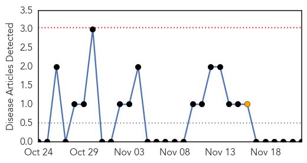
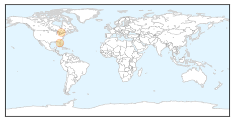

Chikungunya
30-Day Web Trend
0 alerts, 1 warnings

30-Day Twitter Trend
0 alerts, 0 warnings

Article Locations

Article Confidences

Top Articles:
-
No articles found for Nov 22, 2015
Top Tweets:
-
No tweets found for Nov 22, 2015
Influenza
30-Day Web Trend
0 alerts, 0 warnings

30-Day Twitter Trend
2 alerts, 0 warnings

Article Locations
Article Confidences

Top Articles:
Top Tweets:
- 0.646
- Increased Number of Human Cases of Influenza Virus A(H5N1) Infection, Egypt, 2014-15 https://t.co/yRrAV5sgYc https://t.co/ovQgG7zVOt
- 0.574
- Improving the representativeness of influenza viruses shared within the who global influenza surveillance and r... https://t.co/MHws7negZb
- 0.500
- Assessment of potential public health impact of a quadrivalent inactivated influenza vaccine in Thailand https://t.co/4uS0ZXd45G